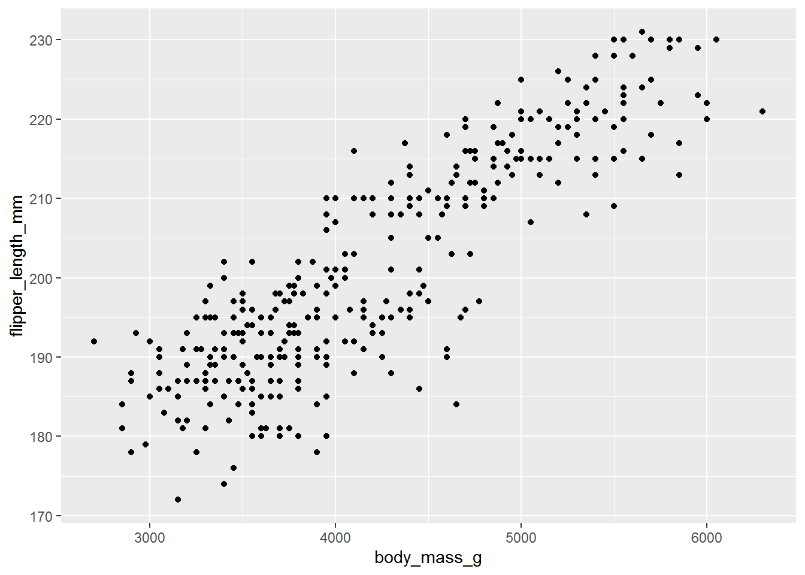
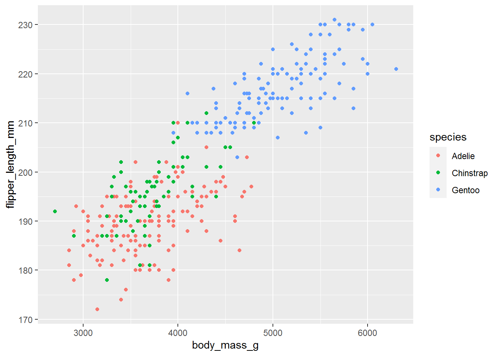
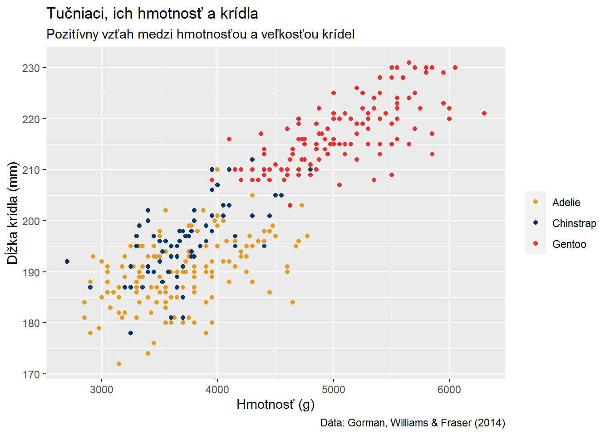
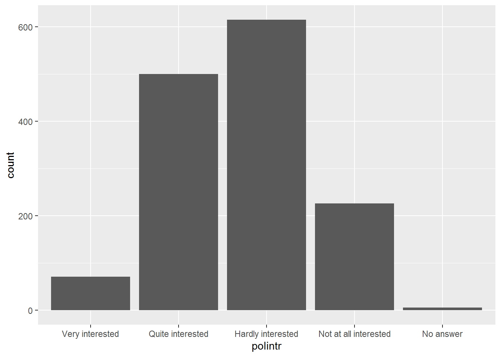
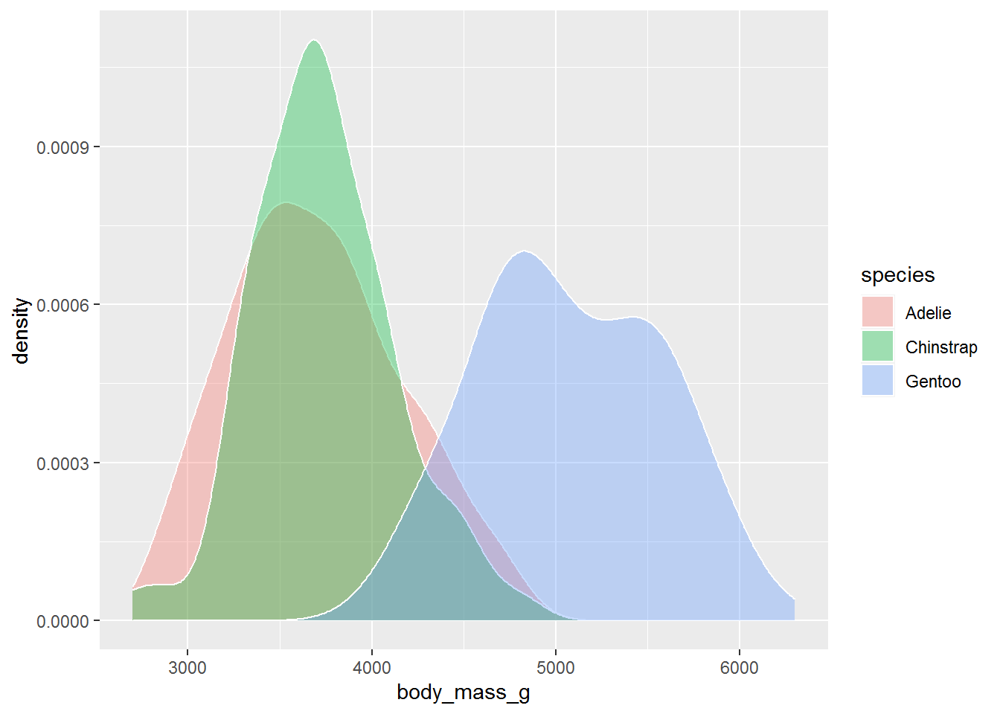
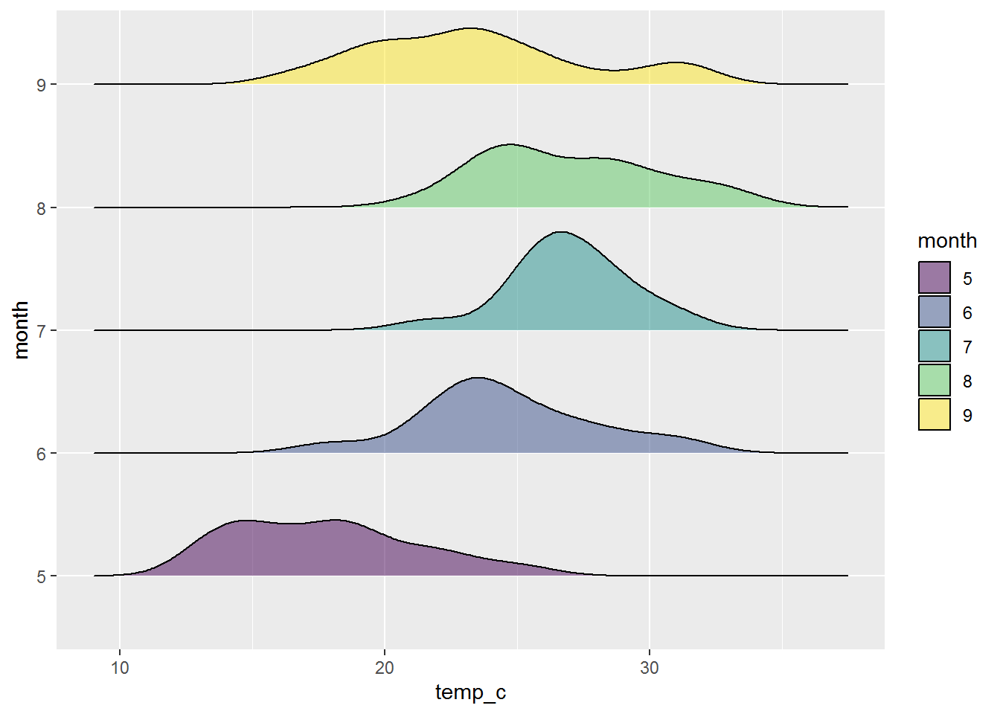
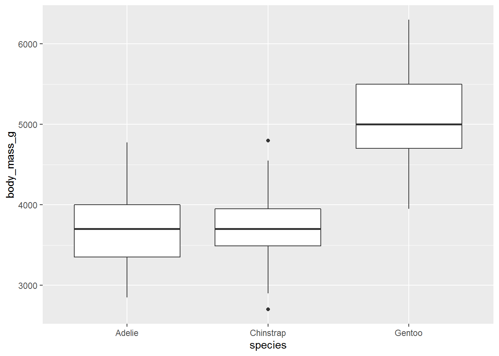
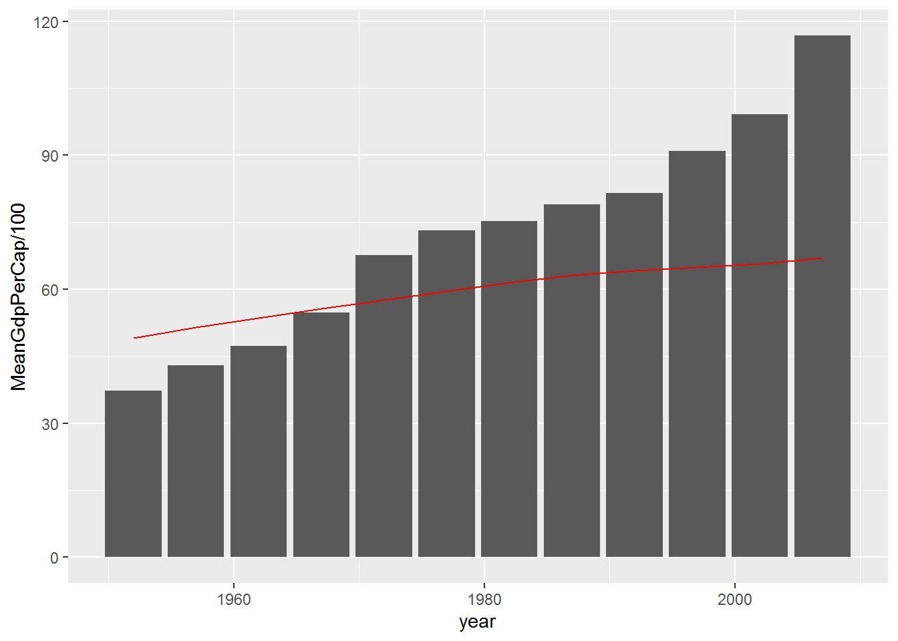

4 Ggplot a vizualizácia dát
4.1 Čo je ggplot
- Knižnica, ktorá stavia na logike knižnice tidyverse
- Umožňuje tvorbu a editáciu grafov, pričom na to poskytuje nespočetne veľa nástrojov
- Založená na The Grammar of Graphics (preto ggplot).
- využívaný médiami ako Financial Times, BBC alebo spoločnosťami ako Airbnb, Uber.
4.2 Pred tým ako začneme

- Minimalizujte rušivé prvky v grafe, prezentujte grafom dáta, nie samotný graf
- Vyberte správny typ grafu pre dátat, ktoré máte
- Osiam dajte názov a postarajte sa o to, aby bol informatívny
- x aj y os by ideálne mali začínať od 0 (zmenšovanie osí môže viesť k mätúcim interpretáciám)
- používajte rovnaké jednotky! (nemiešajte napríklad ročné HDP s mesačným)
- dobrý zdroj na best practices pre vizualizáciu dát nájdete tu: https://clauswilke.com/dataviz/index.html
- NIKDY, PROSÍM, NEPOUŽÍVAJTE 3D KOLÁČOVÉ GRAFY
Ja, keď vidím hocijaký koláčový graf:

4.3 Načítanie knižníc
Ak niektorú z knižníc nemáte, treba ju nainštalovať prostredníctvom install.packages funkcie. Takto nainštalujete všetky potrebné knižnice:
packages_needed <- c("readr", "dplyr", "haven", "broom","gapminder", "palmerpenguins", "ggplot2", "ggridges", "ggthemes", "gghighlight", "ggforce", "patchwork", "eurostat", "maps", "sf")
install.packages(packages_needed)# načítanie a úprava dát
library(readr)
library(dplyr)
library(haven)
library(broom)
# dátové zdroje
library(gapminder)
library(palmerpenguins)
# základné vizualizácie
library(ggplot2)
library(ggridges)
library(ggthemes)
library(gghighlight)
library(ggforce)
library(patchwork)
# na vytvorenie máp
library(eurostat)
library(maps)
library(sf)# ďalšie dáta
penguins_df <- palmerpenguins::penguins
gapminder_df <- gapminder
ess_hun <- read_csv("data/ESS_Hun_7.csv")
stocks <- read_csv("data/stocks.csv")4.4 Príprava datasetu pre ggplot
ggplot pracuje veľmi dobre s long datasetmi. Je možné definovať mu jednotlivé premenné z wide datasetu, avšak pri takomto postupe stráca užívateľ viacero možností úpravy grafu (hlavne pokiaľ kaegorické premenné, ktoré sú pre graf dôležité nie sú v long formáte).
Rozhodnutie aký formát datasetu užívateľ použije záleži od toho, aký graf chce vystavať. Pri tých jednoduchých je možné pracovať aj s wide datasetom. So zložitejšími je lepšie pracovať v long formáte aspoň pri potrebných premenných.

4.5 Ggplot a jeho logika
Na začiatok sa pozrieme, ako sa tvorí ggplot graf a ako v ňom upraviť niektoré jeho prvky. Použijeme na to Palmerson Penguind dataset, ktorý obsahuje údaje o 344 tučniakoch rozdelených do troch druhov a žijúcich na súostroví Palmer v Antarktíde.
4.5.1 Špecifikácia dát
Na začiatok je pre graf potrebné špecifikovať dáta. Dá sa to dvoma základnými spôsobmi, prostredníctvom ggplot funkcie alebo cez %>%.
ggplot(data = penguins_df)
penguins_df %>% ggplot()
Spôsob, ktorým budete zostavovať je na Vás. Zvyčajne sa používa prvý spôsob, avšak ak chcete ešte pred vytvorením grafu upraviť dáta, tak môžete použiť druhý spôsob, pri ktorom nebudete vytvárať nové objekty.
4.5.2 Určíme dimenzie dát
V druhom kroku povieme ggplotu, ktoré dáta z datasetu má vybrať a na ktorej osi sa majú nachádzať.
ggplot(data = penguins_df,
mapping = aes(x = body_mass_g,
y = flipper_length_mm))
Ako môžete vidieť, špecifikáciu konkrétnych dát, ktoré chceme použiť, nastavíme pomocou mapping argumentu a aes (aesthetics) funkcie v ňom.
4.5.3 Špecifikácia zobrazenia dát
V ďalšom kroku si vyberieme ako chceme naše dáta zobaziť. Možností je naozaj veľmi veľa, v tomto prípade si však vyberieme bodový graf.
ggplot(data = penguins_df,
mapping = aes(x = body_mass_g,
y = flipper_length_mm)) +
geom_point()## Warning: Removed 2 rows containing missing values (geom_point).
geom_point funkcia nám zobrazí reprezentáciu dát prostredníctvom bodov definovaných x a y súradnicou. Ďalšie funkcie, ktoré upravujú graf pridávame prosredníctvom znamienka + (nie cez %>%).
ggplot takisto zobrazuje varovanie, že dva body boli z grafu odstránené, lebo obsahujú missing values.
4.5.4 Pridanie tretej dimenzie
Okrem toho, že chceme vidieť vzťah medzi hmotnosťou a dĺžkou krídel by nás mohlo zaujímať aj porovnanie jednotlivých druhov tučniakov. Do grafu teda potrebujeme pridať tretiu dimenziu.
ggplot(data = penguins_df,
mapping = aes(x = body_mass_g,
y = flipper_length_mm,
color = species)) +
geom_point()
Argument color v aes funkcií nám definuje farbu jednotlivých bodov na základe kategorickej premennej. Zároveň vytvorí v grafe legendu.
4.5.5 Úprava prvkov v aes funkcii
Každý prvok v aesthetics je možné upraviť (scale). Využívajú sa na to funkcie, ktoré začínajú so slovom scale a potom pokračujú podľa druhu úpravy. Napríklad môže ísť o scale_color_manual.
ggplot(data = penguins_df,
mapping = aes(x = body_mass_g,
y = flipper_length_mm,
color = species)) +
geom_point() +
scale_color_manual(values = c("#E49C20", "#003669", "#E73230"))## Warning: Removed 2 rows containing missing values (geom_point).
4.5.6 Úprava textových prvkov grafu
v ggplote je samozrejme možné upraviť aj textové prvky grafu. Týmito môžu byť názov, zdroj, ale aj názvy osí. Toto je možné prostredníctvom labs funkcie.
ggplot(data = penguins_df,
mapping = aes(x = body_mass_g,
y = flipper_length_mm,
color = species)) +
geom_point() +
scale_color_manual(values = c("#E49C20", "#003669", "#E73230")) +
labs(
title = "Tučniaci, ich hmotnosť a krídla",
subtitle = "Pozitívny vzťah medzi hmotnosťou a veľkosťou krídel",
caption = "Dáta: Gorman, Williams & Fraser (2014)",
x = "Hmotnosť (g)",
y = "Dĺžka krídla (mm)",
color = "" # nešpecifikujeme názov legendy
)## Warning: Removed 2 rows containing missing values (geom_point).
4.5.7 Výber témy grafu
ggplot ponúka viacero preddefinovaných zobrazení grafu. Tieto sú uložené ako témy (themes), ktoré môžete kedykoľvek použiť. Samozrejme je možné si tému aj vytvoriť a používať ju v budúcnosti. V tomto prípade vyberieme tému theme_minimal.
ggplot(data = penguins_df,
mapping = aes(x = body_mass_g,
y = flipper_length_mm,
color = species)) +
geom_point() +
scale_color_manual(values = c("#E49C20", "#003669", "#E73230")) +
labs(
title = "Tučniaci, ich hmotnosť a krídla",
subtitle = "Pozitívny vzťah medzi hmotnosťou a veľkosťou krídel",
caption = "Dáta: Gorman, Williams & Fraser (2014)",
x = "Hmotnosť (g)",
y = "Dĺžka krídla (mm)",
color = ""
) +
theme_minimal()## Warning: Removed 2 rows containing missing values (geom_point).
4.5.8 Exportovanie grafu
Graf je možné exportovať pomocou funkcie ggsave, kde zároveň môžete definovať, jeho rozlíšenie (už žiadne rozrastrené grafy z plot karty v RStudio!), rozmery, ako aj formát súboru. Defaultne ggsave ukladá posledný vytvorený graf, ale cez argumenty viete aj určiť, ktorý graf má byť exportovaný, tak, že si ho uložíte do R objektu. Ak nedefinujete presnú cestu, tak je graf uložený do Vášho working directory.
my_plot <- ggplot(data = penguins_df,
mapping = aes(x = body_mass_g,
y = flipper_length_mm)) +
geom_point()
ggsave(my_plot, filename = "my_plot.png", dpi = 320, width = 120, height = 120)4.6 Rôzne typy grafov v ggplote
Táto sekcia je venovaná ukážkam tvorby základných grafov. Pozrieme sa na to, ako vytvoriť stĺpcové, bodové, čiarové grafy, ako aj boxploty a histogrami. Okrem toho, že ukážeme ako sa tieto grafy dajú vytvoriť, sa budeme snažiť poukázať na najčastejšie problémy, na ktoré užívatelia narážajú.
4.6.1 Stĺpcový graf
Stĺpcové grafy sa využívajú hlavne pre vizualizáciu kategorických dát. Predtým ako začneme tvoriť grafy si pripravíme dáta. Premeníme textové premenné na faktory, aby ggplot poznal poradie jednotlivých premenných. Ak sa nám poradie po tejto zmene nepáči, môžeme ho zmeniť, tak ako sme si ukazovali v úvodných lekciách.
ess_hun <- ess_hun %>%
mutate(
gndr = factor(gndr, labels = c("Female", "Male")),
polintr = factor(polintr, labels = c("Very interested", "Quite interested", "Hardly interested", "Not at all interested", "Refusal", "Don't know"), ordered = TRUE)
)Stĺpcové grafy je možné v ggplote vytvoriť pomocou dvoch funkcií: geom_bar a geom_col. Rozdiel medzi týmito doma funkciami je dobre popísaný v dokumentácii pre ggplot: “geom_bar() makes the height of the bar proportional to the number of cases in each group (or if the weight aesthetic is supplied, the sum of the weights). If you want the heights of the bars to represent values in the data, use geom_col() instead. geom_bar() uses stat_count() by default: it counts the number of cases at each x position.geom_col() uses stat_identity(): it leaves the data as is.”
V našom prípade budeme pre ukážky používať geom_bar
ggplot(ess_hun, aes(polintr)) + ## argumenty netreba menovať
geom_bar()
Môžeme použiť fill argument na zapracovanie ďalšej premennej do nášho grafu. Pozrime sa ako sú tieto kategórie ďalej delené na základe rodu. Defaultne dostávame skladaný stĺpcový graf.
ggplot(ess_hun, aes(polintr, fill = gndr)) +
geom_bar()
Na zmenu typu stĺpcového grafu môžeme využiť position argument v geom_bar funkcii. Zároveň si môžeme ukázať aj ďalší trik, ktorý spraví náš graf čitateľnejším - coord_flip.
ggplot(ess_hun, aes(polintr, fill = gndr)) +
geom_bar(position = "dodge") +
coord_flip()
Stĺpce môžeme spraviť aj proporčnými za využitia argumentov y = ..prop.. a group = 1. Os y bude tak upravená na zobrazovanie podieľov. ..prop.. je dočasná premenná, ktorá má pred a za .. na to, aby sa nepomýlila s prípadnou ozajstnou prop premennou.
ggplot(ess_hun, aes(polintr, fill = gndr)) +
geom_bar(position = "dodge", aes(y = ..prop.., group = gndr)) +
coord_flip()
Predošlý zápis Vám tak uľahčuje prácu, keď nemusíte dopočítavať premenné napríklad takto:
vypocet <- ess_hun %>%
group_by(gndr) %>%
mutate(Pocet = n()) %>%
ungroup() %>%
group_by(polintr, gndr) %>%
summarize(Prop = n()/first(Pocet))
ggplot(vypocet, aes(polintr, Prop, fill = gndr)) +
geom_col(position = "dodge") + #všimnite si zmenu geom
coord_flip()
V stĺpcových grafoch je tiež možné kombinovať kategorické a priebehové premenné. Na to však treba upraviť dáta tak, aby nám dávali nejaké agregované hodnoty. Napríklad dopočítame priemernú dĺžku zobáka pre každý druh tučniakov v našom datasete:
penguins_mean <- penguins_df %>%
group_by(species) %>%
summarise(avg_bill_length = mean(bill_length_mm, na.rm = TRUE))
penguins_meanTieto dáta následne použijeme na náš graf. Ako aj v predošlom príklade máme premennými definované obe dimenzie (x aj y). Jedným riešením je v tomto prípade použiť geom_col, ktorý počíta s dvom premennými. Môžeme však použiť aj argument v geom_bar, ktorým potlačíme defaultne nastavenie tejto funkcie. Argument stat len zmeníme na identity.
ggplot(penguins_mean, aes(x = species, y = avg_bill_length)) +
geom_bar(stat = "identity") +
coord_flip()
4.6.2 Bodové grafy zobrazujúce množstvá
Namiesto stĺpcových grafov je niekedy možné použiť bodové. Vyberme si z gapminder datasetu dáta z amerického svetadielu pre roky 1987 a 2007 a zobrazme si vývoj strednej dĺžky života v jednotlivých krajinách.
gapminder_americas <- gapminder_df %>%
filter(continent == "Americas", year %in% c(1987, 2007)) %>%
mutate(year = as.factor(year))
head(gapminder_americas)ggplot(gapminder_americas, aes(lifeExp, reorder(country, lifeExp), color = year)) + #reorder argument nám zoradí krajiny podľa priemernej strednej dĺžky života za oba roky
geom_point()
Na zvýraznenie medziročných zmien môžeme body spojiť čiarou. Všimnite si, že sme museli posunúť color aesthetic do geom_point a použiť group = country v geom_line. Dôvodom tejto špecifikácie je, že geom_line by nemalo prevziať farby pre rok a že zároveň potrebuje definovať premennú, ktorá bude združovať dáta tak, aby čiara spojila dátove body v rámci krajiny. Takisto dbajte na to, aby geom_point bola v tomto prípade posledná funkcia v poradí, keďže ggplot vykresľuje jednotlivé vizualizácie v chronologickom poradí.
ggplot(gapminder_americas, aes(lifeExp, reorder(country, lifeExp))) +
geom_line(aes(group = country)) +
geom_point(aes(color = year)) +
labs(
x = "Stredná dĺžka života",
y = NULL,
color = NULL
) +
theme_minimal()
4.6.3 Histogram
Pokračujme s oboznamovaním sa s gapminder datasetom tým, že sa pozrieme na distribúcie niektorých premenných:
ggplot(gapminder_df, aes(x = lifeExp)) +
geom_histogram() 
Na zvýraznenie grafu môžeme použiť color a fill argument v rámci geom_ funkcie. Aký myslíte, že je rozdiel medzi týmito dvoma argumentami?
Všimnite si, že sme zároveň prostredníctvom bandwith argumentu v geom_histogram funkcii zmenili šírku stĺpcov a teda aj intervaly rozdelenia skupín v rámci histogramu. Rozlíšenie histogramu sa nám tomu samozrejme prispôsobilo.
ggplot(gapminder_df, aes(x = lifeExp)) +
geom_histogram(binwidth = 1, color = "black", fill = "orange")
V jednom grafe je možné zobraziť aj histogramy pre rôzne skupiny. Pozrime sa na distribúciu pre jednotlivé svetadiely (kontinenty?) použitím fill argmuentu.
ggplot(gapminder_df, aes(x = lifeExp, fill = continent)) +
geom_histogram()
4.6.4 Density grafy (nepovinné)
Variácia pre histogramy môžu byť density grafy. Tie používajú Kernel vyrovnávanie krivky (čo znie fancy, ale funkcia v zásade používa vážené priemery susediacich dátových bodov)
ggplot(penguins_df, aes(x = body_mass_g)) +
geom_density()## Warning: Removed 2 rows containing non-finite values (stat_density).
Pridáme výplň v grafe.
ggplot(penguins_df, aes(x = body_mass_g)) +
geom_density(fill = "orange", alpha = 0.3)
Myslíte si správne, aj density grafy vieme vykresliť tak, aby sa prekrývali. Takisto ako pri histograme na to použijeme fill aesthetic, čím dostaneme tri rôzne density krivky pre druhy tučniakov. Pre čitateľnosť grafu upravíme alpha argument tak, aby výplň bola priehľadnejšia.
ggplot(penguins_df, aes(x = body_mass_g, fill = species)) +
geom_density(alpha = 0.35, color = "white")
4.6.5 Ridgelines (nepovinné)
Tento typ grafu je dobre vyzerajúci a veľmi informatívny. Má podobnú funkciu ako prekrývajúce sa histogramy, avšak dáta prezentuje oveľa jasnejšie. Pre vytvorenie takéhoto grafu potrebujeme ggridges knižnicu, ktorá je rozšírením ggplot. Tento typ grafu je najužitočnejší, keď potrebujeme vizualizovať distribúcie v priebehu času alebo ak sa potrebujeme pozrieť na veľké množstvo distribúcií naraz. Pre ukážku použijeme airquality dataset, ktorý je súčasťou zabudovaných ukážkových datasetov.
airquality_df <- airquality %>%
mutate(
temp_c = (Temp - 30) / 2,
month = factor(Month, ordered = TRUE)
)
head(airquality_df)ggplot(airquality_df, aes(x = temp_c, y = month, fill = month)) +
geom_density_ridges(scale = 0.8, alpha = 0.5)
4.6.6 Box plot
Box plot (krabicový graf) môže byť dobrý spôsob ako zobraziť Vaše distribúcie. Tento jednoduchý graf ukazuje veľa informácií o Vašich dátach. Samotný box obsahuje 50% hodnôt, čiary zobrazujú maximálnu a minimálnu hodnotu odhliadnuc od vzdialených pozorovaní. Čiara vnútri boxu označuje medián, horná a dolná hranica boxu predstavuje prvý a tretí kvartil. Samotný boxplot zároveň naznačuje aký je rozptyl Vašich dát a či sú vychýlené do niektorej zo strán.


ggplot(penguins_df, aes(x = species, y = body_mass_g)) +
geom_boxplot()
Box plot môžeme spraviť zaujímavejším zvýraznení vzdialených pozorovaní a pridaním pozícií jednotlivých hodnôt tým, že tiež použijeme geom_jitter.
ggplot(penguins_df, aes(x = species, y = body_mass_g)) +
geom_boxplot(outlier.color = "orange") +
geom_jitter(alpha = 0.25)
4.7 x~y vzťahy
Doteraz sme sa zameriavali väčšnou na zobrazovanie deskriptívnych informácií o dátach. V tejto časti prejdeme na vizualizáciu vzťahov medzi premennými.
4.7.1 Bodový vzťahový graf
V predošlých častiach sme už pracovali s bodovým grafom, ktorý však do istej miery nahrádzal stĺpcový pri zobrazovaní určitého “množstva”. V tejto časti sa ale budeme venovať bodovému grafu, ktorý znázorňuje vzťah medzi dvoma priebehovými premennými. Väčšinou zobrazujeme na y osi našu závislú premennú (premennú, ktorú sa snažíme vysvetliť) a na x osi zas nezávislú premennú, o ktorej si myslíme, že nejak ovplyvňuje tú závislú.
Pozrime sa na to, či existuje nejaký vzťah medzi HDP per capita a strednou dĺžkou života.
ggplot(gapminder_df, aes(gdpPercap, lifeExp)) +
geom_point()
Aký je problém s týmto grafom?
Keď už máme vytvorený základný graf, tak ho poďme upraviť, aby sme sa zbavili jeho chýb. Prvou vecou, ktorú môžeme urobiť je, že transformujeme hodnoty osi x prostredníctvom scale_x_log10. Zároveň môžeme pridať popisy grafu, ako aj oboch osí pomocou funkce labs. V rámci geom_point môžeme upraviť argumenty pre túto časť grafu ako napríklad alpha level. Takto sa zbavím problému veľa bodov na jednom mieste, pričom logaritmická transformácia x osi nám vizuálne zlepší distribúciu dát.
ggplot(gapminder_df, aes(gdpPercap, lifeExp)) +
geom_point(alpha = 0.25) +
scale_x_log10() +
labs(
x = "HDP per capita",
y = "Stredná dĺžka života",
title = "Spojitosť medzi HDP a strednou dĺžkou života",
subtitle = "Body zobrazujú krajinu v rámci jedného roku",
caption = "Zdroj: Gapminder"
)
Na pridanie trochy analytických prvkov do tohto grafu môžeme použiť geom_smooth funkciu a vybrať metódu, na základe ktorej vykresí trendovú čiaru. Môžeme si vybrať napríklad medzi lm, glm, gam, loess alebo rlm. V tomto prípade použijeme lineárny model (“lm”). Poznámka: Ide o čisto ukážkový príklad. Dátové body sú definované krajinou v roku, čiže “lm” nie je vhodný spôsob na vykreslenie regresnej priamky pre tieto dáta. Tento príklad zároveň ukazuje ako sa dá vykresliť dva geoms v jednom grafe, čo si neskôr ukážeme aj na iných príkladoch.
ggplot(gapminder_df, aes(gdpPercap, lifeExp)) +
geom_point(alpha = 0.25) +
scale_x_log10() +
geom_smooth(method = "lm", se = TRUE, color = "orange") +
labs(
x = "HDP per capita",
y = "Stredná dĺžka života",
title = "Spojitosť medzi HDP a strednou dĺžkou života",
subtitle = "Body zobrazujú krajinu v rámci jedného roku",
caption = "Zdroj: Gapminder"
)
Čo keď sa chceme pozrieť ako sú na tom jednotlivé svetadiely, čo sa týka tohto vzťahu? Potrebujeme na to pridať v mappingu ďalší argument, ktorý nám zobrazí rozdelenie bodov podľa svetadielov. Týmto argumentom môže byť color. Teraz vidíme, že napríklad európske krajiny sa nachádzajú v pravom hornom rohu, čo znamená, že majú vysoké HDP per capita, ako aj vysokú strednú dĺžku života.
ggplot(gapminder_df, aes(gdpPercap, lifeExp, color = continent)) +
geom_point(alpha = 0.5) +
scale_x_log10() +
geom_smooth(method = "lm", se = TRUE, color = "black") +
labs(
x = "HDP per capita",
y = "Stredná dĺžka života",
title = "Spojitosť medzi HDP a strednou dĺžkou života",
subtitle = "Body zobrazujú krajinu v rámci jedného roku",
caption = "Zdroj: Gapminder"
)
Na zobrazenie určitých hraníc v rámci dát vieme do bodového grafu tiež pridať vertikálnu a/alebo horizontálnu čiaru. Na ich pridanie použijeme funkcie geom_hline a geom_vline. V prílade nižšie vykreslíme horizontálnu a vertikálnu pre medián v jednom prípade a priemer v druhom. Podobne ako pri ostatných prvkoch grafu vieme typ čiary zmeniť prostredníctvom argumentu linetype. Čiara môže nadobúdať hodnoty blank, solid, dashed, dotted, dotdash, longdash, twodash.
ggplot(gapminder_df, aes(gdpPercap, lifeExp, color = continent)) +
geom_point(alpha = 0.5) +
geom_vline(xintercept = mean(gapminder_df$gdpPercap), linetype = "dashed") +
geom_hline(yintercept = median(gapminder_df$lifeExp), linetype = "dotted") +
scale_x_log10() +
labs(
x = "HDP per capita",
y = "Stredná dĺžka života",
title = "Spojitosť medzi HDP a strednou dĺžkou života",
subtitle = "Body zobrazujú krajinu v rámci jedného roku",
caption = "Zdroj: Gapminder"
)
4.7.2 Bublinový graf (nepovinné)
Pre ukážku tohto grafu si vyfiltrujeme dáta len za rok 2002. Bublinový graf nám pridáva ďalšiu informáciu v podobe veľkosti jednotlivých bodov, ktorá môže naznačovať napríklad veľkosť populácie jednotlivých krajín. Pri takýchto grafoch si však treba dávať pozor, aby sme čitateľa (publikum) nezahltili s príliš veľa informáciami.
Kontrolovať maximálnu veľkosť bublín je možné prostredníctvom funkcie scale_size_area.
gapminder_df %>%
filter(year == 2002) %>%
ggplot(aes(gdpPercap, lifeExp, size = pop, color = continent)) +
geom_point(alpha = 0.8) +
scale_size_area(max_size = 15) +
scale_x_log10()
4.7.3 Čiarový graf
Čiarový graf pravdepodobne pozná každý z Vás. Pre ukážku tohto typu grafu použijeme hodnoty akcií pri uzávierkách. Ako ste si mohli všimnúť, keďže už sme oboznámení s ggplot syntaxom, tak nevypisujem názvy argumentov ako data = alebo mapping =. Tiež si všimnite, že v tomto prípade musíme definovať group argument na to, aby sme mali čiary vykreslené po spoloťnostiach.
ggplot(stocks, aes(date, stock_index, group = company)) +
geom_line()
Poďme si trochu tento graf poupravovať. Jeden zo spôsobov ako zvýrazniť niektorú z čiar (napríklad $AMZN akcie) je použitie gghighlight knižnice, ktorá je užitočným rozšírením ggplotu.
ggplot(stocks, aes(date, stock_index, group = company)) +
geom_line() +
gghighlight(
company == "AMZN.Close",
use_direct_label = TRUE,
label_params = list(size = 3)
) +
labs(
x = "",
y = "Index, 2006/01/11 = 100",
title = "Denné uzávierkové ceny akcií vybraných tech spoločností",
subtitle = "Dáta od 2016-01-10 do 2018-01-10",
caption = "Zdroj: Yahoo Finance"
)
Rozdelenie grafu do malých grafov po spoločnostiach je výborný spôsob ako sprehľadniť niektoré vizualizácie. Na to, aby sme odtránili legendu z kraja použijeme argument guide = FALSE v scale_color_discrete a scale_fill_discete funkcii. Na zvýraznenie trendov v našich dátach môžeme zároveň vyfarbiť oblasť pod krivkou prostredníctvom funkcie geom_area.
ggplot(stocks, aes(date, stock_index, color = company)) +
geom_line() +
geom_area(aes(fill = company), alpha = 0.6) +
scale_color_discrete(guide = FALSE) +
scale_fill_discrete(guide = FALSE) +
labs(
x = "",
y = "Index, 2006/01/11 = 100",
title = "Denné uzávierkové ceny akcií vybraných tech spoločností",
subtitle = "Dáta od 2016-01-10 do 2018-01-10",
caption = "Zdroj: Yahoo Finance"
) +
facet_wrap(~company, nrow = 4)
4.8 Spájanie grafov do jedného celku
4.8.1 Prekrývanie grafov
V predošlých príkladoch sme si ukázali zopár možností prekrývania sa grafov, ktoré však vychádzali len z pridania kategorickej premennej v rámci rovnakého grafu. Grafy však môžu byť skladané aj takým spôsobom, že napríklad stĺpce zobrazia počty a krivka agregátne počty. V príklade nižšie sa pozrieme na vývoj priemerného HDP na osobu z datasetu gapminder v stĺpcoch, pričom si krivkou zobrazíme vývoj priemernej strednej dĺžky života.
gapminder_agg <- gapminder_df %>%
group_by(year) %>%
summarize(MeanGdpPerCap = mean(gdpPercap, na.rm = T),
MeanlifeExp = mean(lifeExp, na.rm = T))ggplot(gapminder_agg, aes(year, MeanGdpPerCap)) +
geom_col(group = 1) +
geom_line(aes(year, MeanlifeExp), group = 1, color = "red")
Vidíme, že mierka y osi nie je správna. Máme v zásade dve možnosti ako to napraviť. Prvou je vydelenie alebo vynásobenie jednej z premenných.
ggplot(gapminder_agg, aes(year, MeanGdpPerCap/100)) +
geom_col(group = 1) +
geom_line(aes(year, MeanlifeExp), group = 1, color = "red")
To už je lepšie.
4.8.1.1 Tvorba druhej y osi
Druhý spôsob ako to spraviť je pridať druhú y os. To vieme v tomto prípade urobiť prostrednníctvom funckie scale_y_continuos a argumentu sec.axis v rámci nej. Pozrime sa na príklad:
ggplot(gapminder_agg, aes(year, MeanGdpPerCap)) +
geom_col(group = 1) +
geom_line(aes(year, MeanlifeExp), group = 1, color = "red") +
scale_y_continuous(sec.axis = sec_axis(~., name = "Priemerná stredná dĺžka života"))
Ako vidíte, tak ggplot vytvorí druhú y os, ktorá je rovnaká ako tá prvá a neprispôsobuje sa mierkou tým dátam, ktoré chceme. Na to, aby to tak bolo, je treba sa pohrať s násobením a delením druhej y osi, ako aj premennej, ktorú má zobrazovať. V tomto prípade, ako sme videli vyššie, asi bude dobré mierku druhej y osi vydeliť 100. Na to, aby sa aj dáta dobre zobrazovali ich musíme zas vynásobiť 100.
ggplot(gapminder_agg, aes(year, MeanGdpPerCap)) +
geom_col(group = 1) +
geom_line(aes(year, MeanlifeExp*100), group = 1, color = "red") +
scale_y_continuous(sec.axis = sec_axis(~./100, name = "Priemerná stredná dĺžka života")) +
labs(
y = "Priemerné HDP per capita",
x = "Rok"
)
Týmto sa dostaneme k zobrazeniu, ktoré sme použili pri predošlej transformácii dát, avšak už máme zobrazenú aj druhú y os.
ggplot teda nevie prispôsobiť mierku druhej y osi Vašim dátam, túto úpravu musíte spraviť sami, pričom je fajn odraziť sa od pôvodnej y osi a snažiť sa jej prispôsobiť druhú y os tak, aby bol graf stále čitateľný.
4.8.2 Pridávanie rovnakých grafov pre rôzne kategórie
Okrem pridávania prekrývajúcich sa grafov vieme vytvoriť rovnaký graf pre viaceré kategórie. Takýto graf je výborný, ak chceme niečo porovnávať. Na vytvorenie takéhoto grafu použijeme funkcie facet_grid a facet_wrap. Začneme grafom, ktorý sme už vytvorili v predošlých častiach.
ggplot(stocks, aes(date, stock_index, color = company)) +
geom_line() +
geom_area(aes(fill = company), alpha = 0.6) +
scale_color_discrete(guide = FALSE) +
scale_fill_discrete(guide = FALSE) +
labs(
x = "",
y = "Index, 2006/01/11 = 100",
title = "Denné uzávierkové ceny akcií vybraných tech spoločností",
subtitle = "Dáta od 2016-01-10 do 2018-01-10",
caption = "Zdroj: Yahoo Finance"
) +
facet_wrap(~company, nrow = 4)
Rovnaké hodnoty na oboch osiach nám dávajú možnosť dobre porovnávať jednotlivé kategórie. Ak však chceme, aby sa mierka prispôsobila dátam v rámci kategórie, môžeme použiť argument scales vo funkcii facet_wrap. Možnosti, ktoré máme sú free, free_x, free_y.
ggplot(stocks, aes(date, stock_index, color = company)) +
geom_line() +
geom_area(aes(fill = company), alpha = 0.6) +
scale_color_discrete(guide = FALSE) +
scale_fill_discrete(guide = FALSE) +
labs(
x = "",
y = "Index, 2006/01/11 = 100",
title = "Denné uzávierkové ceny akcií vybraných tech spoločností",
subtitle = "Dáta od 2016-01-10 do 2018-01-10",
caption = "Zdroj: Yahoo Finance"
) +
facet_wrap(~company, ncol = 3, scales = "free") # zmenili sme aj počet stĺpcov
Okrem takýchto grafov sa dajú vytvoriť tie, ktoré budú v rade vedľa seba.
ggplot(stocks, aes(date, stock_index, color = company)) +
geom_line() +
geom_area(aes(fill = company), alpha = 0.6) +
scale_color_discrete(guide = FALSE) +
scale_fill_discrete(guide = FALSE) +
labs(
x = "",
y = "Index, 2006/01/11 = 100",
title = "Denné uzávierkové ceny akcií vybraných tech spoločností",
subtitle = "Dáta od 2016-01-10 do 2018-01-10",
caption = "Zdroj: Yahoo Finance"
) +
facet_grid(~company) +
theme(axis.text.x = element_text(angle = 90)) # otočíme text osi x
4.8.3 Pridávanie rôznych grafov do jedného
Poslednou možnosťou pridávania grafov do jedného je využiť patchwork knižnicu. Jej syntax je veľmi priamočiara, keďže používa jednoduché znaky ako +, /, |. Vytvorme si tri grafy a dajme ho do jedného.
p_scatter <- ggplot(penguins_df, aes(x = body_mass_g, y = flipper_length_mm, color = species)) +
geom_point() +
theme_minimal()
p_sina1 <- ggplot(penguins_df, aes(x = species, y = body_mass_g)) +
geom_sina(aes(color = species), alpha = 0.2) +
geom_violin(alpha = 0.25, fill = "grey") +
theme_minimal() +
theme(legend.position = "none")
p_sina2 <- ggplot(penguins_df, aes(x = species, y = flipper_length_mm)) +
geom_sina(aes(color = species), alpha = 0.2) +
geom_violin(alpha = 0.25, fill = "grey") +
theme_minimal() +
theme(legend.position = "none")Po vytvorení troch nezávislých grafov a ich definovaní do objektu si ich usporadajme tak, aby bol bodový graf na vrchu a zvyšné dva pod ním vedľa seba.
p_scatter / (p_sina1 | p_sina2)
patchwork knižnica je veľmi flexibilná a jej dokumentácia vcelku prepracovaná. Ak potrebujete vytvoriť nezávislé grafy a dať ich do jedného, tak si pozrite ako je možné ich usporiadať na stránke tejto knižnice: https://patchwork.data-imaginist.com/index.html
4.9 ggplot témy a formátovanie
V tomto bode by ste mali byť oboznámení fungovaním ggplot a zároveň by ste mali vedieť vytvoriť rôzne druhy grafov. Avšak ggplot ponúka nespočetné množstvo funkcií, ktorými si viete upraviť to, ako Váš graf vyzerá. Okrem toho komunita vytvorila a stále vytvára niekoľko rozšírení, ktoré Vám vedie pomôcť pri partikulárnych problémoch.
4.9.1 Témy
V tejto časti si prejdeme niekoľko prvkov, ktoré v grafe viete upraviť, tak aby ste vytvorili dobre vyzerajúci graf. ggplot však ponúka niekoľko preddefinovaných tém, ktoré môžete využiť. Môžete si poskúšať témy, ktoré sú súčasťou ggplot knižnice, ale existujú aj iné, ktoré nájdete v ggthemes knižnici. V ggthemes nájdete aj témy, ktoré využívajú vo fivethirtyeight alebo Economiste. Zaujímavou knižnicou prinášajucou rôzne témy je hrbthemes. BBC okrem toho vytvorilo aj svoju vlastnú knižnicu, ktorú nájdete tu: https://github.com/bbc/bbplot.
Poskúšajte si viaceré a porovnajte si v čom sa líšia. Zmeniť tému, ako ste už mohli vidieť vyššie, vieme prostredníctvom theme_* funkcie.

Mojou najoblúbeňejšou je theme_bw, ale výber záleží na Vás. Nakoniec si môžete akúkoľvek tému prispôsobiť alebo vytvoriť vlastnú, k čomu sa ešte dostaneme.
ggplot(gapminder_df, aes(x = gdpPercap, y = lifeExp)) +
geom_point(alpha = 0.25) +
scale_x_log10() +
theme_bw() # pridáme tému
4.9.2 Prvky grafu a ich formátovanie
Ako bolo spomenuté vyššie, v ggplote viete upraviť pomaly každý prvok grafu.

Kľúčovými prvkami grafu, na ktoré sa pozrieme sú (anglicky pre lepšiu orientáciu):
- labels
- grid lines
- fonts
- colors
- legend
- axis breaks
Pre ukážku použijeme graf, ktorý sme vytvorili na začiatku.
ggplot(penguins_df, aes(x = body_mass_g, y = flipper_length_mm, color = species)) +
geom_point()
Pridajme inú farebnú škálu. Môžeme použiť “brewer scale”, ktorá je často využívaná pre dátovú vizualizáciu. Keď si chcete pozrieť rôzne farebné škály, tak navštívte: http://colorbrewer2.org. scale_color_brewer priamo pristupuje k paletám z colorbrewer2, čiže nemusíme všetko kopírovať zo stránky.
ggplot(penguins_df, aes(x = body_mass_g, y = flipper_length_mm, color = species)) +
geom_point() +
scale_color_brewer(name = "Species", palette = "Set2") # pridáme škálu z brewer scale
Tiež vieme definovať svoje vlastné farby cez funkciu scale_color_manual. Napríklad korporátne farby AC:
ggplot(penguins_df, aes(x = body_mass_g, y = flipper_length_mm, color = species)) +
geom_point() +
scale_color_manual(values=c("#E49C20", "#003669", "#E73230")) # pridanie vlastnej farebnej škály
Na jednoznačnejšie rozlíšenie jednotlivých kategórií vieme použiť rôzne tvary bodov:
ggplot(penguins_df, aes(x = body_mass_g, y = flipper_length_mm, color = species, shape = species)) +
geom_point()
Pre ilustráciu toho, ako viete upraviť graf sa pohráme v tomto príklade s viacerými nastaveniami. Ako prvé odstránime pozadie, nech dostaneme čistejší graf, ale zároveň ponecháme mriežku. Prostredníctvom argumentu axis.ticks v rámci funkcie theme odstánime tiež označenia čísel na osi (čiarky, ktoé z grafu vytŕčajú). Schovať alebo inak upraviť mrežku ide prostredníctvom theme funkcie, kde je možné použiť panel.grid.major alebo panel.grid.minor argumenty. Ak chcete upraviť mriežku len na jednej osi, tak treba použiť panel.grid.major.x alebo panel.grid.major.y (prípadne .minor alternatívy). V tomto prípade mriežke zmeníme farbu na šedú, zmenšímne ju a spravíme čiary bodkovanými. Os vieme modifikovať prostredníctvom element_line funkcie v argumente axis.line.
ggplot(penguins_df, aes(x = body_mass_g, y = flipper_length_mm, color = species, shape = species)) +
geom_point() +
theme(
panel.background = element_blank(), # odstráni pozadie
axis.ticks = element_blank(), # odstráni označenia osí (čiarky)
panel.grid.major = element_line(color = "grey", size = 0.1, linetype = "dotted"), # prefarbí a zmení typ čiar miežky
axis.line = element_line(colour = "grey") # zmení farbu osí
) 
Nakoniec upravme legendu. Môžeme ju aj vymazať theme(legend.position="none") alebo v tomto prípade presunúť dole. Takisto nepotrebujeme pozadie legendy, čiže to odstránime pomocou legend.key. Takisto sa môžeme pohrať s textovými prvkami prostredníctvom argumentu text.
ggplot(penguins_df, aes(x = body_mass_g, y = flipper_length_mm, color = species, shape = species)) +
geom_point() +
theme(
axis.ticks = element_blank(), # odstráni označenia osí (čiarky)
panel.grid.major = element_line(color = "grey", size = 0.1, linetype = "dotted"), # prefarbí a zmení typ čiar miežky
panel.background = element_blank(),
axis.line = element_line(colour = "grey"),
legend.title = element_text(size = 12), # nastaví veľkosť písma legendy
text = element_text(face = "plain", family = "sans"), # nastaví písmo v celom grafe
legend.key=element_blank(), # odstráni pozadie v legende
legend.position = "bottom" # zmení polohu legendy
)
Do finálnej verzie grafu pridáme vlastné farby, označenia a všetky úpravy, ktoré sme doteraz spravili.
ggplot(penguins_df, aes(x = body_mass_g, y = flipper_length_mm, color = species, shape = species)) +
geom_point() +
labs(
title = "Tučniaci, ich hmotnosť a krídla",
subtitle = "Pozitívny vzťah medzi hmotnosťou a veľkosťou krídel",
caption = "Dáta: Gorman, Williams & Fraser (2014)",
x = "Hmotnosť (g)",
y = "Dĺžka krídla (mm)",
color = "" # nešpecifikujeme názov legendy
) +
scale_color_manual(values = c("#E49C20", "#003669", "#E73230")) +
scale_shape(guide = FALSE) +
theme(
axis.ticks = element_blank(), # odstráni označenia osí (čiarky)
panel.grid.major = element_line(color = "grey", size = 0.1, linetype = "dotted"), # prefarbí a zmení typ čiar miežky
panel.background = element_blank(), # odstráni pozadie
axis.line = element_line(colour = "grey"), # zmení farbu osí
legend.title = element_text(size = 12), # # nastaví veľkosť písma legendy
text = element_text(face = "plain", family = "sans"), # nastaví písmo v celom grafe
legend.key=element_blank(), # odstráni pozadie v legende
legend.position = "bottom" # zmení polohu legendy
)
Pre ďalšie úpravy použijeme gapminder dataset. Dataset si správíme spracovateľnejší tým, že si vyfiltrujeme niektoré dáta.
Na označenie jednotlivých bodov v grafe vieme použiť geom_text funkciu.
gapminder_small <- gapminder_df %>%
filter(
lifeExp >= 72.5,
gdpPercap >= 10000,
continent == "Europe",
year == 2002
)
ggplot(gapminder_small, aes(lifeExp, gdpPercap, label = country)) + # pridáme označenia
geom_point() +
geom_text() # pridáme označenia
Vidíme, že sa nám označenia prelínajú. Na vyhnutie sa tomuto problému použijeme ggrepel knižnicu, v ktorej nájdeme funkcie geom_text_repel a geom_label_repel.
ggplot(gapminder_small, aes(lifeExp, gdpPercap, label = country)) +
geom_point() +
ggrepel::geom_text_repel()
Všimnite si tiež rozdiel medzi geom_label a geom_text.
ggplot(gapminder_small, aes(lifeExp, gdpPercap, label = country)) + # pridáme označenia
geom_point() +
geom_label() # a použijeme geom_label
Ak potrebuje označiť len určitú časť bodov, tak to vieme spraviť v rámci ggplotu, bez potreby zmeny našich dát.
ggplot(gapminder_df, aes(gdpPercap, lifeExp, label = country)) + # pridáme označenia
geom_point(alpha = 0.25) +
geom_text(aes(label = if_else(gdpPercap > 60000, country, NULL))) # pridáme podmienku v rámci geom## Warning: Removed 1699 rows containing missing values (geom_text).
4.9.3 Vytvorenie témy
Vytvorenie si vlastnej témy pre ggplot je asi najviac dostupná možnosť ako si rozšíriť svoj ggplot. Najľahšia cesta ako si spraviť vlastnú tému je použiť už existujúcu a upraviť ju. Pre tento účel použijeme theme_minimal a pridáme do nej zopár vecí, ktoré sme upravovali vyššie. Nazveme ju theme_custom. Nová téma je v zásade novou funkciou, ktorá používa pôvodnú tému a upravuje v nej jednotlivé prvky, ktoré zadefinujeme pomocou %+replace#+%.
theme_custom <- function() {
theme_minimal() %+replace%
theme(
panel.grid.major.y = element_line(color = "grey", size = 0.1, linetype = "dotted"),
panel.background = element_blank(),
axis.line = element_line(colour = "grey"),
legend.title = element_text(size = 12),
text = element_text(face = "plain", family = "sans"),
legend.key=element_blank()
)
}A teraz ju použime na dáta o tučniakoch.
ggplot(penguins_df, aes(x = body_mass_g, y = flipper_length_mm, color = species)) +
geom_point() +
theme_custom()## Warning: Removed 2 rows containing missing values (geom_point).